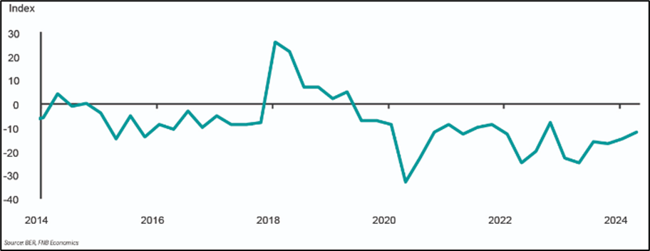

1.2 Data
1.2.1 What is data?
Data are the raw facts and figures, about objects or events, that are collected, analyzed and summarized for presentation and interpretation in order to make informed decisions. Data typically arises as a result of a study. For instance, suppose the South African Reserve Bank (SARB) wants to forecast inflation in the next 12 months (the study). They will collect data about the inflation rate in the previous years and other factors influencing inflation. All the data collected by the SARB is referred to as a data set.
Table 1 gives a data set containing information about the 9 provinces of South Africa. The data was obtained from the 2022 South African census. The South African census is conducted every 10 years. A census provides information on the demographic, socioeconomic and geographic characteristics of the entire population, as well as household characteristics.
1.2.2 Properties of a data set
Any data set has three essential properties, namely
1.2.2.1 Elements
These are the entities or objects on which the data are collected. Each of the nine provinces in Table 1 are the elements of the data.
1.2.2.2 Variables
These are the characteristics of interest about the elements. The data set in Table 1 has eight variables:
Coastal or Inland: The province’s area of location in South Africa; It can be either coastal or inland.
Population size: The number of people in a province.
% of households with no internet access: The number of households that have no access to the internet in a province as a percentage of the total population in a province.
Sex ratio: The number of males for every 100 females in a province. A value above 100 indicates that there are more males than females.
Median age
Province where most of the population migrate: A province in South Africa where most of the population in another province migrate to.
% of population with no schooling: The number of persons in a province with no formal schooling as a percentage of the total number of persons in the province.
% of homeless persons: The number of homeless persons in a province as a percentage of the total number of homeless persons in South Africa.
1.2.2.3 Observations
These are the sets of measurements obtained from each element. From Table 1, the first element (Eastern Cape) has the following measurements:
| 1 | 7230204 | 34.3 | 90 | 27 | WC | 7.2 | 7.2 |
The second element (Free State) has the following measurements:
| 2 | 2964412 | 20.8 | 90.4 | 28 | GP | 5 | 6 |
and so on. The data set with 9 elements has 9 observations.
1.2.3 Observational and experimental data
Data can come from an observational study or an experimental study. Observational data are records of what is actually taking place in a particular situation. The data in Table 1 are an example of observational data. As another example of observational data, a bank might observe client visits at one of their branches to collect data on variables such as the length of time a typical client spends at the branch, the number of clients visiting the branch on a given day (e.g. Monday or last day of the month), the age of the clients and so on. Statistical analysis of this data may, for instance, help bank management decide whether or not to close the branch in order to reduce operational costs.
Experimental data is data that is obtained under controlled conditions. It is typically used to test a hypothetical statement. For instance, suppose a pharmaceutical company would like to test whether a new drug they developed is effective for weight loss. To obtain the data, researchers select a sample of individuals. The individuals are instructed to follow the same diet. One group (treatment group) of individuals is given a dose of the new drug and another group (control group) is not given the new drug. After two months, we collect data on the weight of individuals in each group and compare it with the weight data collected before the experiment. Statistical analysis of the data can help determine whether the average weight loss of the treatment group is significantly greater than that of the control group.
1.2.4 Cross-sectional and time-series data
For appropriate analysis, interpretation and communication with the collected data, a distinction must be made between cross-sectional data and time series data. Cross-sectional data are data collected at the same point in time about two or more elements. The data in Table 1 are cross-sectional because they describe eight variables about the nine provinces (elements) at the same point in time (2022). Time series data are data collected over several time periods. For instance, the figure below shows the estimated Life Expectancy at birth in South Africa for the period 2002 to 2024. Time series plots, such as the figure below, are very useful in understanding what happened in the past, identifying whether there are any trends over time and, often, forecast future values of the time series.
A time series plot is typically easy to understand and interpret. For example, from the figure, we can see that life expectancy at birth declined between 2002 and 2006. Incidentally, this was a period of increasing HIV prevalence and lack of awareness and information about prevention measures. However, due to increased awareness of HIV, expansion programmes to prevent mother-to-child transmission coupled with access to ARVs, life expectancy at birth increased from 2006 before declining in 2020 due to COVID-19.
1.2.5 Population and sample
Typically, the elements in a study consist of a large number of objects or events. For instance, suppose an accounting firm, such as KPMG, wants to determine whether the amount of accounts receivable reflected on a client’s financial statement fairly represents the actual amount of accounts receivable. Usually large industrial or manufacturing businesses, such as Bidvest Group, will have a large number of accounts receivables which will make reviewing and validating every account too costly and time-consuming. As a common practice, the audit staff selects a subset of all the accounts. This subset of accounts is known as a sample and all of the accounts receivable are known as a population. The process of collecting the data is called sampling.
Note that, although the elements of the data in Table 1 are the provinces, the data itself was collected from individuals from the population of South Africa. Therefore, the elements in a census survey or study are a population.
1.2.6 Exercises to Section 1.2
Question 1
What is a data set?
Question 2
Name the properties of a data set.
Question 3
In 2023, FNB commissioned a retirement survey to find out how prepared South African consumers were for retirement. Is the data obtained from the survey respondents experimental or observational?
Question 4
Suppose a study is conducted to find out whether vaping (or e-cigarette smoking) is less harmful compared to tobacco smoking. Is the data obtained from the study experimental or observational?
Question 5
Figure ?? gives a bar chart showing the annual revenue of Shoprite over a ten-year period from 2014 to 2023 (The data were obtained from the annual financial statements of Shoprite9 and the graph was plotted using Excel).
a. What is the variable of interest?
b. Are the data cross-sectional or time-series?
c. What can you say about the trend in Shoprite’s revenue overtime?
Question 6
Figure ?? shows the quarterly FNB/BER Consumer Confidence Index for the period 2014, 1st quarter, to 2024, 2nd quarter10. The index measures confidence among South African consumers based on their outlook on the economy and their household financial position. A higher value indicates high confidence11.

Are the data cross-sectional or time-series?
Comment on the confidence of the South African consumer over time.
Question 7
The South African Bureau of Economic Research collects data from South African adults living in predominantly urban areas to measure consumer confidence in South Africa. Survey respondents are asked about
their expectation about the performance of the economy;
their expectation about the financial position of households;
their rating of the present time to buy durable goods (e.g. electronic appliances).
What is the population being studied?
Is surveying mostly people in the urban areas a good way to get a good picture of consumer confidence in a country like South Africa?
Question 8
The 2024 Annual FNB Retirement survey collected data from a sample of 1072 South African consumers to, amongst other things, uncover their preparedness for retirement. Almost half of the respondents indicated that they do not have a retirement plan in place and 20% of the respondents indicated an annual income of more than R 850 000.
What is the population of interest in this survey?
Is the data collected from the survey observational or experimental?
Does this survey involve cross-sectional data or time-series data?
Describe any useful insights for FNB that can be obtained from the collected data.
https://www.shopriteholdings.co.za/shareholders-investors/financial-results-archive.html?p=1↩︎
https://www.fnb.co.za/blog/investments/articles/EconomicsWeekly-20240913/?blog=investments&category=Economics&articleName=EconomicsWeekly-20240913↩︎
https://www.ber.ac.za/Documents/Index/FNBBER-Consumer-Confidence-Index↩︎